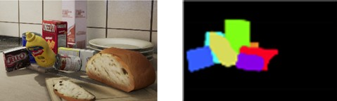
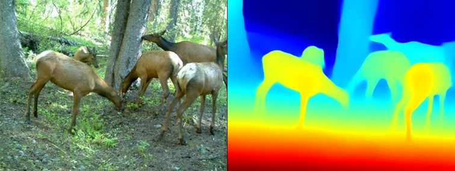

BA-INF 051 - Projektgruppe Intelligente Sehsysteme
PD Dr. Volker Steinhage
Dienstags, 14-16 Uhr, SR 1.047
Vorbesprechung: Dienstag, 8. Sept. 2020, 14 Uhr via
https://bbb.informatik.uni-bonn.de/b/vol-x2d-g4x
Themen:
|



|
Instance Rendering von synthet. Daten für Supervised Deep Learning (2 Themen) Supervised Deep Learning erfordert große Mengen von annotierten Trainingsdaten. Häufig fehlen entsprechend große Mengen, sodass annotierten Trainingsdaten synthetisch erzeugt werden. In der Computer Vision steht dabei das Rendering von 3D-Szenen im Vordergrund. Neben regulären RGB-Bildern werden Segmentierungsmasken, Instanzenmasken oder Tiefenbilder gerendert. Zielsetzung der Arbeiten ist (1) die Generierung synthetischer Bildsequenzen von animierten Wildtiermodellen mit einer Rendering Engine, (2) das Training einer Deep-Learning-Architektur sowie (3) die Evaluierung der Ergebnisse. Zwingend erforderlich sind Kenntnisse in Computergrafik, Modellierung und Scripting mit Blender und Python oder mit Unreal Engine und C++. Begründete Alternativvorschläge für Rendering-Engines und Scripting-Umgebungen sind möglich. Hilfreich aber nicht erforderlich ist Erfahrung mit Deep Learning und Frameworks wie PyTorch oder Tensorflow. Oben und mittig: RGB-Bild, Instanzmaske, Tiefenbild, Pose (Quelle: NVIDIA). Unten: Synthetisches Rendering eines Rehs mit Objektmaske, RGB-Bild, Tiefenbild
|
| Tracking (2 Themen)
Ziel ist die Implementierung eines Tracking-Algorithmus, der auf Künstlichen Neuronalen Netzen basiert.
Dabei wird mit Trainingsdaten aus einem aktuellen Forschungsprojekt gearbeitet. Bevor der Tracking-Algorithmus implementiert wird, gibt es
eine Einarbeitungsphase in Python und PyTorch, mit denen die Implementierung durchgeführt werden soll. Dafür wird zunächst ein Beispiel
für die Detection und Instance Segmentation anhand von Mask R-CNN betrachtet.
Das Ziel eines Tracking-Algorithmus ist es, in einem Video Objekte zu detektieren und im Verlauf zu tracken, d.h., jede Detektion (z.B. Bounding Box)
erhält zusätzlich eine target-ID. So können Individuen einer Klasse voneinander unterschieden und verfolgt werden.
Generelle Voraussetzungen: Kenntnisse über Künstliche Intelligenz, insbesondere Grundkenntnisse zu Neuronalen Netzen.
Gute Programmierkenntnisse (möglichst in Python; tiefere Python-Kenntnisse können aber auch in der Projektgruppe erlernt werden)
Es gibt zwei Trackingalgorithmen zur Auswahl:
|
| Animal keypoint detection & pose estimation using deep learning (1 Thema)
Die Erkennung von sog. Keypoints bei Tieren hat bedeutende Implikationen für die
Bestimmung der Körperhaltung von Tieren und die damit verbunden Verhaltensanalysen.
Hier soll auf Deep Learning basierende Methodik zurückgegriffen werden:
|
|  | Animal keypoint detection & pose estimation using deep learning (1 Thema) Das Internet bietet zahlreiche Quellen für annotierte Bild/Videodaten. Annotierte 2,5-Bild/Videodaten bzw. RGB-D-Daten sind hingegen seltener zu finden. Deep-Learning-basierte Tiefenschätzungen auf der Basis von annotierten monokularen Bilddaten (z.B. MiDaS) sind hier eine attraktive Option. Aufgabe ist hier also die Erzeugung von annotierten RGB-D-Daten aus annotierten monokularen Bild/Videodaten. Für Videodaten sind zusätzlich Methoden von Optical Flow einzusetzen. Von Stereokameras erzeugte 2,5-Bild/Videodaten liegen als Ground Truth zum Vergleich vor. |
| Home | News | Teaching | Projects | Publications | Team |